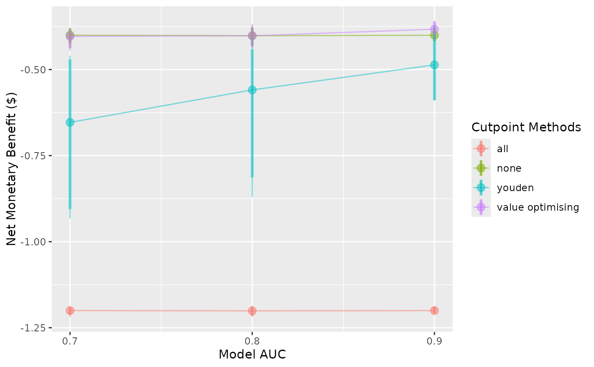
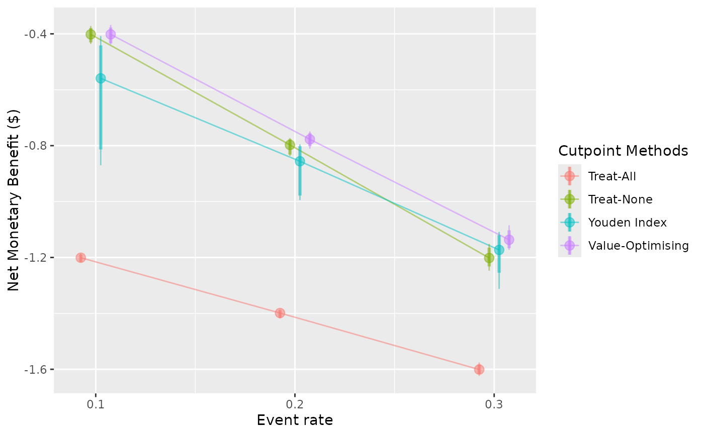

Create plots of from screened predictNMB simulations.
Source:R/autoplot.R
autoplot.predictNMBscreen.RdCreate plots of from screened predictNMB simulations.
Usage
# S3 method for class 'predictNMBscreen'
autoplot(
object,
x_axis_var = NULL,
constants = list(),
what = c("nmb", "inb", "cutpoints", "qalys", "costs"),
inb_ref_col = NA,
plot_range = TRUE,
plot_conf_level = TRUE,
plot_line = TRUE,
plot_alpha = 0.5,
dodge_width = 0,
conf.level = 0.95,
methods_order = NULL,
rename_vector,
...
)Arguments
- object
A
predictNMBscreenobject.- x_axis_var
The desired screened factor to be displayed along the x axis. For example, if the simulation screen was used with many values for event rate, this could be "event_rate". Defaults to the first detected, varied input.
- constants
Named vector. If multiple inputs were screened in this object, this argument can be used to modify the selected values for all those except the input that's varying along the x-axis. See the summarising methods vignette.
- what
What to summarise: one of "nmb", "inb", "cutpoints", "qalys" or "costs". Defaults to "nmb".
- inb_ref_col
Which cutpoint method to use as the reference strategy when calculating the incremental net monetary benefit. See
do_nmb_simfor more information.- plot_range
logical. Whether or not to plot the range of the distribution as a thin line. Defaults to TRUE.- plot_conf_level
logical. Whether or not to plot the confidence region of the distribution as a thicker line. Defaults to TRUE.- plot_line
logical. Whether or not to connect the medians of the distributions for each method along the x-axis. Defaults to TRUE.- plot_alpha
Alpha value (transparency) of all plot elements. Defaults to 0.5.
- dodge_width
The dodge width of plot elements. Can be used to avoid excessive overlap between methods. Defaults to 0.
- conf.level
The confidence level of the interval. Defaults to 0.95 (coloured area of distribution represents 95% CIs).
- methods_order
The order (left to right) to display the cutpoint methods.
- rename_vector
A named vector for renaming the methods in the summary. The values of the vector are the default names and the names given are the desired names in the output.
- ...
Additional (unused) arguments.
Details
This plot method works with predictNMBscreen objects that are
created using screen_simulation_inputs(). Can be used to visualise
distributions from many different simulations and assign a varying input
to the x-axis of the plot.
Examples
# \donttest{
get_nmb <- function() c("TP" = -3, "TN" = 0, "FP" = -1, "FN" = -4)
sim_screen_obj <- screen_simulation_inputs(
n_sims = 50, n_valid = 10000, sim_auc = seq(0.7, 0.9, 0.1),
event_rate = c(0.1, 0.2, 0.3),
fx_nmb_training = get_nmb, fx_nmb_evaluation = get_nmb,
cutpoint_methods = c("all", "none", "youden", "value_optimising")
)
autoplot(sim_screen_obj)
#> No value for 'x_axis_var' given.
#> Screening over sim_auc by default. Specify the variable in the 'x_axis_var' argument if you want to plot changes over:
#> event_rate
#>
#>
#> Varying simulation inputs, other than sim_auc, are being held constant:
#> event_rate: 0.1

autoplot(
sim_screen_obj,
x_axis_var = "event_rate",
constants = c(sim_auc = 0.8),
dodge_width = 0.02,
rename_vector = c(
"Value-Optimising" = "value_optimising",
"Treat-None" = "none",
"Treat-All" = "all",
"Youden Index" = "youden"
)
)
#>
#>
#> Varying simulation inputs, other than event_rate, are being held constant:
#> sim_auc: 0.8

# }